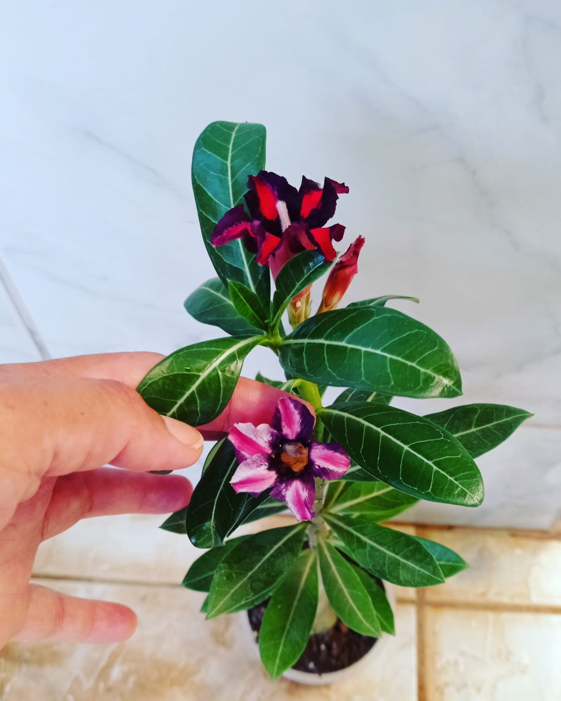
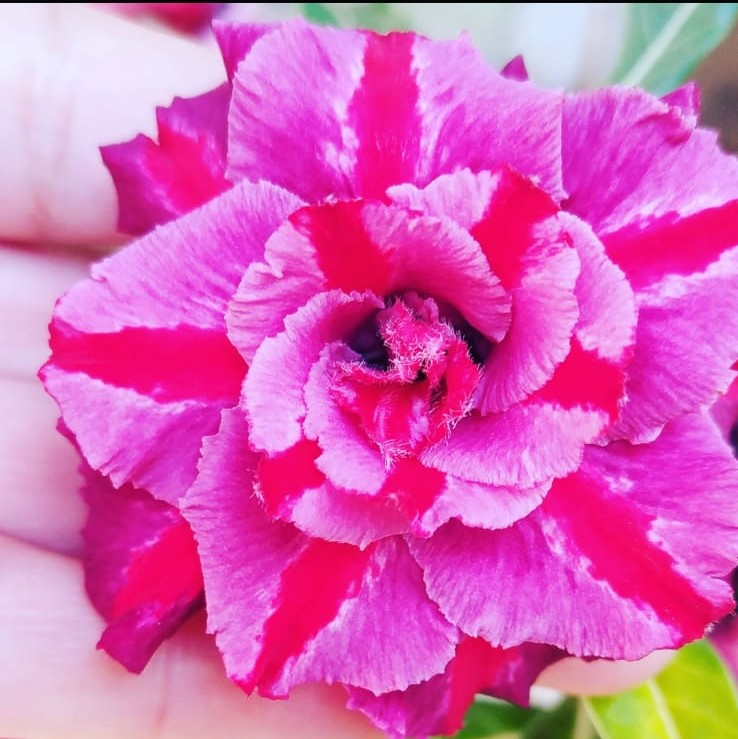
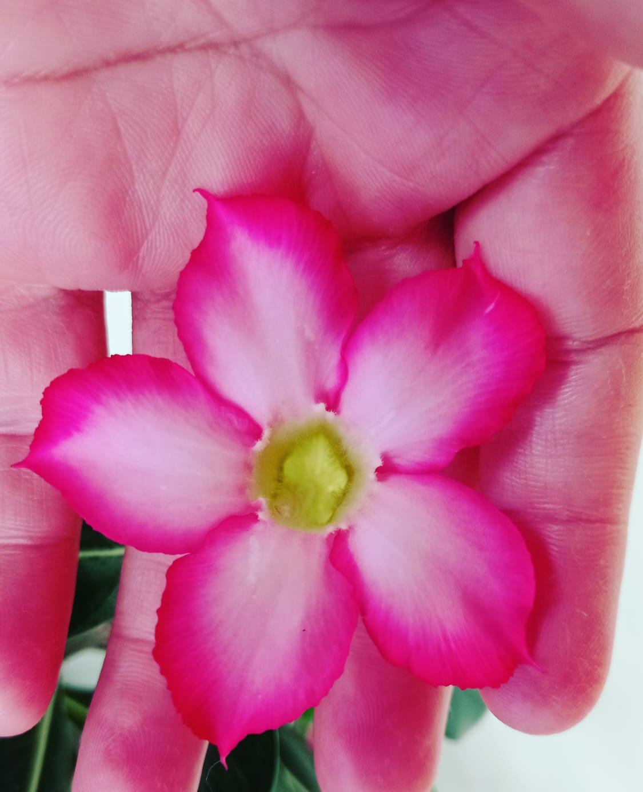
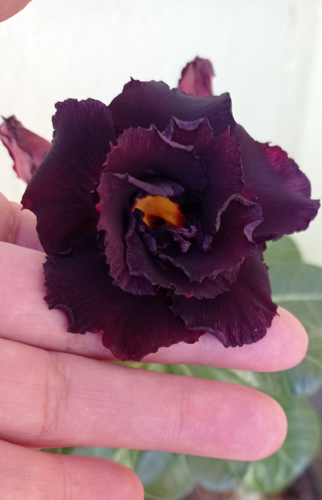
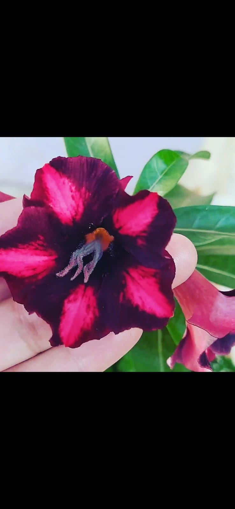
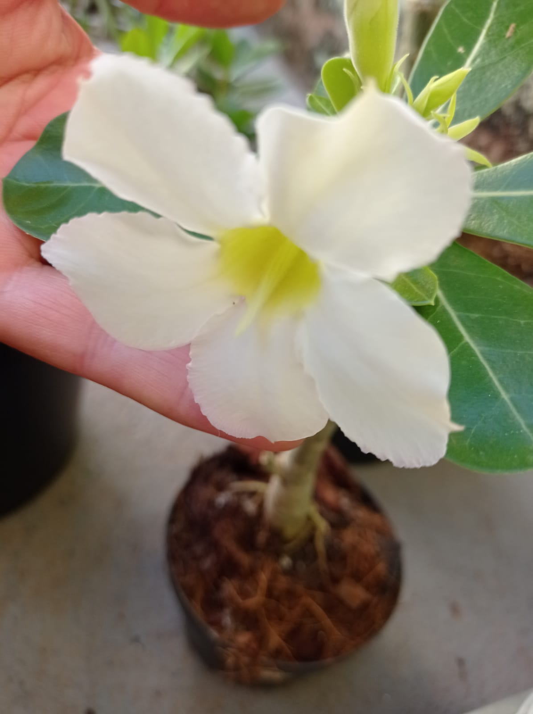
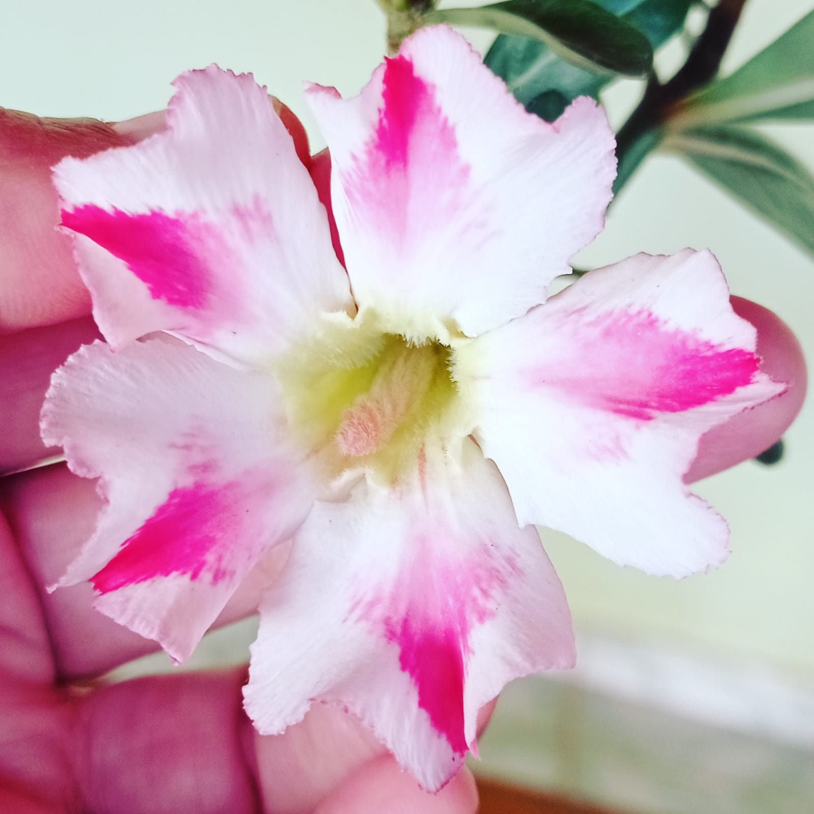
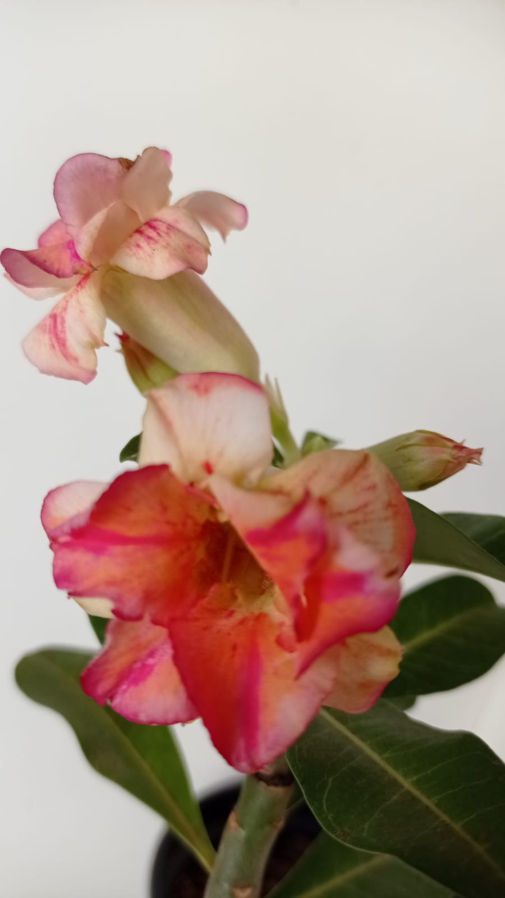
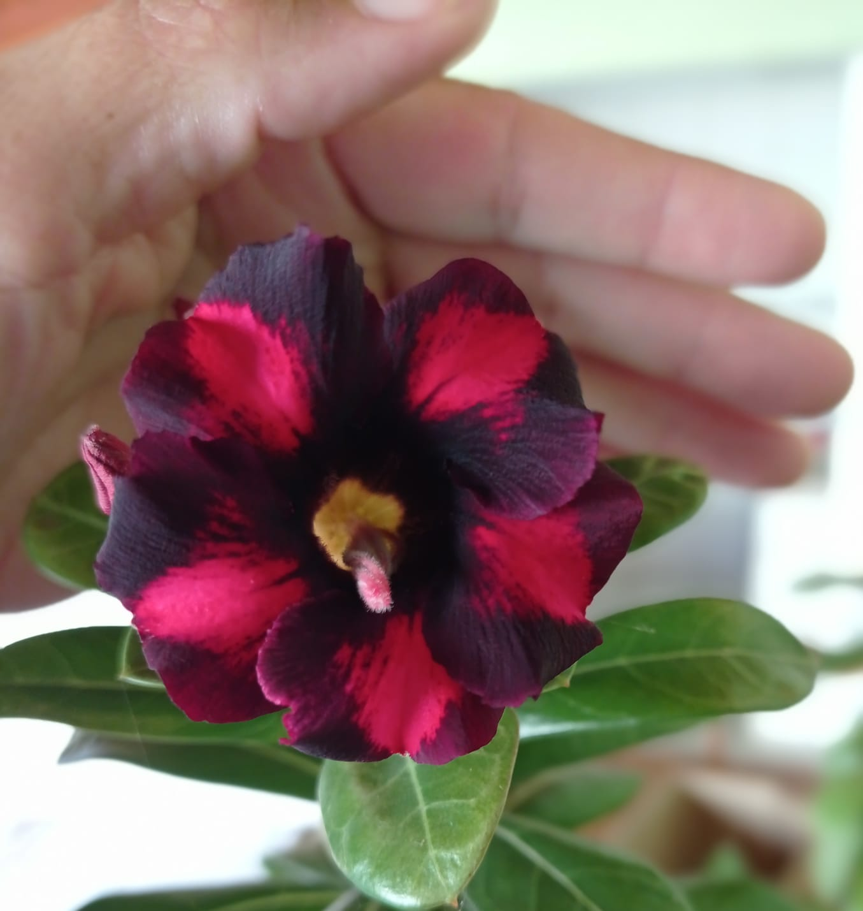

Nossa trajetória com as Rosas do Deserto começou como uma grande paixão e se transformou em uma busca constante por qualidade e beleza. Como especialistas em flores, nosso conhecimento floresce para oferecer as melhores e mais exóticas variedades de rosas para o seu ambiente.
Fale pelo Direct do InstagramTécnicas avançadas para o melhor desenvolvimento e floração da sua rosa do deserto.
Arranjos criativos e personalizados que transformam qualquer ambiente.
Dicas e acompanhamento para manter suas plantas saudáveis e bonitas o ano todo.

Delicadeza clássica

Cores vibrantes

Rara e sofisticada

Contraste perfeito

Pura e elegante

Beleza dupla

Paixão e pureza

Mistura incrível
Venha nos visitar e conhecer de perto a beleza das nossas rosas do deserto.